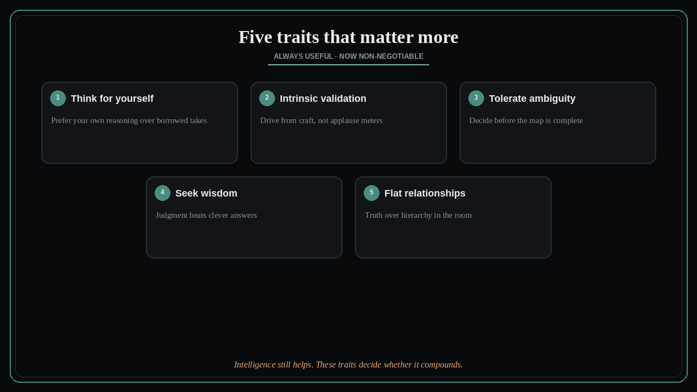

Five traits that matter more than cleverness
Source: Shreyas Doshi (@shreyas)
original post
What it claims
The traits that will matter most are not new: desire to think for yourself, drive from intrinsic validation, tolerance for ambiguity, seeking wisdom over mere intelligence, and relating without hierarchy. They always mattered. With abundant answers and borrowed takes, they are about to matter a lot more.
Why it matters for a PO
POs sit in ambiguity with stakeholders who want certainty, AI that floods the room with options, and org ladders that reward looking right. Clever slides are cheap. Judgment under incomplete evidence, saying what you actually believe, and treating the engineer or customer as a peer in truth-seeking — that is the scarce skill. If your validation comes only from applause in the steering committee, you will ship what flatters, not what works.
3 takeaways
- Outsourced thinking (frameworks, AI drafts, famous-person quotes) is a starting point, not a decision.
- Ambiguity is the job: wait for perfect data and you are late; invent false certainty and you are wrong.
- Wisdom is choosing what matters; intelligence is solving what you already chose — do not confuse them.
Practice this week
Before your next prioritization or discovery review, score yourself 1–5 on each of the five traits for how you showed up last week. Pick the lowest. Design one concrete move (present your own recommendation before AI options; invite a dissenting IC to speak first). Do that move once this week and note what changed in the room.